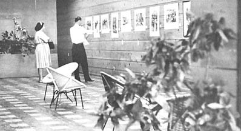
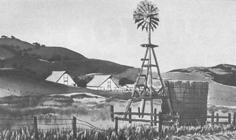
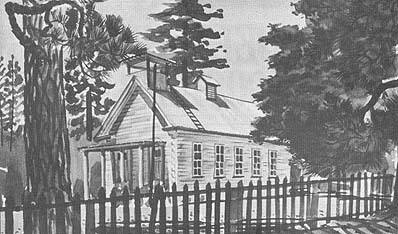

I've been drawing and painting ever since I was a kid, but I was almost forty years old before I discovered a way to sell my work. In fact, for most of those years it didn't occur to me that anyone might be interested in buying! Of course, many people said they liked my work (and some hinted that they'd accept gifts), but none offered to buy. Meanwhile, I made my living mostly as an advertising artist, hating more and more the business of trying to trick people into making unnecessary purchases.
In 1964 I got involved in the campaign for Fair Housing in California and I was assigned to raise some money. Like most amateur fund raisers, I didn't relish the task and had very few ideas on how to do it. I did know that the less you spend to raise the money, the less you have to raise . . . so instead of putting on a dinner or an entertainment I decided to go for cash donations, cold turkey.
Since I wanted to make those donations as large as possible, I got to thinking of ways to encourage big checks. At the time I was feeling guilty because I seldom got out to paint on weekends as I once had and it occurred to me that if I offered to paint a watercolor for each person who gave a large amount it might kill two birds with one stone. Well, I did it, half a dozen people took me up on the offer and when the campaign ended I started painting.
Naturally, I was elated to find all six people pleased with the watercolors they received and I was further encouraged to discover that some of my friends and co-workers also admired the paintings. I began to wonder if they would be willing to pay for my work and I decided to make a test. During the next few months I produced about twenty paintings which I considered worth showing and I then went looking for a place in which to put them.
My plan was to hold a show for relatives, friends, co-workers, neighbors and anyone else who might wander in. I wanted a place that was accessible to all, with adequate parking and room for displays that could be well lighted. I soon realized that the ideal spot would be an empty store in a shopping center! Luckily, I found just what I needed in my own neighborhood and the owner offered to let me use it free if I would leave the "For Lease" sign in the window.
At the time I considered this a rare bit of good fortune, but I have since discovered that I can make similar arrangements in other shopping centers. Landlords and their agents ,are always anxious to bring more customers into their centers, because many of their tenants pay rent based upon income. More customers mean more money and an art show-which adds a touch of class-is just the thing to bring those customers in. Interestingly (and I always point this out) every store I have used has been rented before my show ends!
About then, the wheels in my head began to churn in earnest. If this first show were a success, why not why nor have others? If people who knew me would buy paintings, why wouldn't strangers? I began to analyze it as a merchandising problem. Because of my advertising background I found myself asking questions which most artists never think to ask, answer.
The first question was: How much is one painting let along worth-not in terms of esthetics, but in materials, time and overhead-and what must I charge for it?
I estimated that it takes me an average of two hours to paint a watercolor (I always paint outdoors and light changes so much in two hours that the scene before me is no longer the same). But that is not my only time investment. I must count the hours spent traveling to and from painting locations and any time spent on an earlier occasion searching for likely painting spots.
Some of my work doesn't make it, must be discarded and the time spent on such paintings figured as overhead expense. Preparing mats and hanging exhibits also takes time.
When I finished adding in my material costs (paper, paint, matboard) and figuring my time at $10 an hour, I decided I could afford to sell unframed watercolors for thirty-five dollars each.
Then I made a personal survey of pictures in department and variety stores and found that my price for an original painting was competitive with the price tags on their mass-produced copies. This meant that I could compete for a share of, probably, the largest picture market in the world.
Because I wanted money as well as applause, I called my event an art "sale" instead of "show." I hand-lettered an invitation, had several hundred copies printed by photo offset and sent one to everybody I could think of. I used every mailing list I had (Christmas card, office, political, etc.), and then I went through the phone book and sent an invitation to each name I recognized that wasn't on my lists. I also mailed an invitation to every local paper.
Next, I hand-lettered a dozen or so posters with felt pens and all of the stores in the shopping center allowed me to put posters in their windows or on the front of their shops. I also placed posters on the bulletin boards of the branch libraries in three or four nearby communities. Finally, I put a large poster in the front window of my store and displayed signs on an easel set up out in front.
Because many people go away on weekends, I decided to open my exhibit on Thursday evening and close it late on Monday. That way, if people couldn't come to the show on the weekend, they could see it on Friday or Monday.
I decided to have a drawing for a free painting so that I could build up a mailing list for another show. Although I was interested primarily in names and addresses, I happened to put a question on the entry blank asking people which paintings they liked best. I didn't know it at the time but that turned out to be the smartest thing I did.
After the sale started, I found that many people would come in, spend a few minutes looking around and then start to leave. Before they could get out I would ask if they wanted to win a free painting (and they all did), so they took the form and started to fill it out. Then they discovered that I wanted their opinion and the fun began!
Each person would go back to the paintings and spend anywhere from thirty minutes to two hours looking them all over again. Naturally, once I learned this, I saw to it that every person who came in the door was handed an entry blank! Some people who said they didn't have time to look carefully would come back later and bring all their family and friends.
Well the question had been, would people like the paintings enough to pay cash and take them home? The answer was yes. More than half the paintings were sold in three days. The only troublesome thing about the whole affair was the query, asked over and over again: "Why are all the paintings thirty-five dollars?" Everyone seemed to think that some paintings ought to cost more than others.
For my second sale, I raised the price on half the paintings to fifty dollars and left the others at thirty-five . . . and I found that I sold just as many at one price as at the other. Only now, everyone asked what the difference was! I resisted an impulse to say it was fifteen dollars in my pocket and merely said that I liked the higher priced ones a little more, which was true.
I've now held a number of sales and, at each one, I've varied some part of the procedure in order to test my assumptions. Now I'm satisfied that on the very first attempt I came pretty close to the correct solution. Furthermore, I believe that I've developed a formula which can be repeated innumerable times by myself or by others with success. This year I plan to hold at least six sales-each in a different locality-and, if my theories hold up, I may have even more shows. If I run into problems, I'll try to discover where the fault lies and adjust the formula until it works again. Here's the basic rules:
I. HAVE A UNIQUE PRODUCT
You should have a unique product to sell . . . some thing only you can produce (although others may produce similar items). Works of art fit this definition better than anything else, but the formula will work for many items.
II. TAP AN EXISTING MARKET
There should be an existing market for the product (you can't afford to develop the market by yourself) and there must be a large number of potential buyers who desire the product and have the ability to pay cash for it. Of course it is axiomatic that you must sell your output in neighborhoods where these buyers normally shop (usually suburban communities).
III. BE COMPETITIVE
Your price must be competitive within the existing market.
IV. GIVE YOURSELF A LIVING WAGE
Your price must be sufficient to guarantee you a reasonable income for your time and cover your out-of-pocket expenses. If you cannot arrive at a price which satisfies both III and IV you are not going to make it.
V. PLAN YOUR SALE
Always call your event a "Sale" and always have a time limit. I have experimented with shorter and longer periods and I believe that Thursday through Monday is as long as one of these sales ought to be, while Friday through Sunday is as short as it should be. A short time period forces people to make up their minds, particularly if the date of the next sale is uncertain.
VI. PICK YOUR LOCATION
The location must be a busy and popular shopping center with plenty of parking so that people can combine other chores with a visit to your sale. What's more, at a shopping center, folks are liable to come in again and again whenever they go to the store (which can be often on a weekend in Suburbia!). Also, it's easy to tell people how to find you. I find I can usually get a store rent free or-at most-for a $3 or $4 light bill.
Promise to clean the place; in fact, most empty stores are pretty dirty and you can explain that you must clean the shop in order to use it. I also tell landlords that the store always finds a paying tenant when I come in, no matter how long it has remained vacant!
VII. KEEP IT A ONE-MAN SHOW
Never put on a joint show with other artists. If several of you want to cooperate, do it by helping each other put on one-man exhibits (which are much more effective). Customers are confused if you have more than one artist or too great a variety of products for sale. Keep things simple.
VIII. INVITE EVERYONE
Mail invitations to everyone you can think of. Make your invitation very informal and personal. Tell the folks what you do, why you're doing it, why you're having the sale. Tell them where to come, what days and what hours (and be sure to be there or have someone else there all the time . . . people who might have bought will go away angry if you don't think it's important enough to be there during the hours you advertised).
IX. GET THOSE NAMES AND ADDRESSES
Even if you decide not to have a drawing for a free item, be sure to give those who attend something to write their names and addresses on . . . and don't forget to ask them to pick their favorites! Serve coffee or tea or punch and your visitors will stay even longer.
X. USE SALES RECEIPTS AND PSYCHOLOGY
Give buyers a sales receipt and keep a copy for yourself (you can get these at a stationery store). When I sell a painting I usually ask if the buyer minds leaving it on display for the remainder of the show. Unless he's from out of town he usually agrees. This allows later visitors to see all of your work. It's also good sales psychology to have a few paintings with "sold" markings on them!
If you're a competent artist and follow the businesslike procedure I've just outlined, you should be able to sell your work at reasonable prices without paying fancy commissions or waiting months between sales. Stick entirely to cash deals and leave installment or charge purchases to your competitors. When your sale is over, pack up and move on. If you want to continue selling, move to another town or another part of the same town . . . but don't repeat in the same location for at least six months.
I would wish good luck to all who want to try this method of selling art . . . but if you follow the above instructions, I think you'll find-as I have-that most of the "luck" you need is already built-in.
|
 |
 |
 |